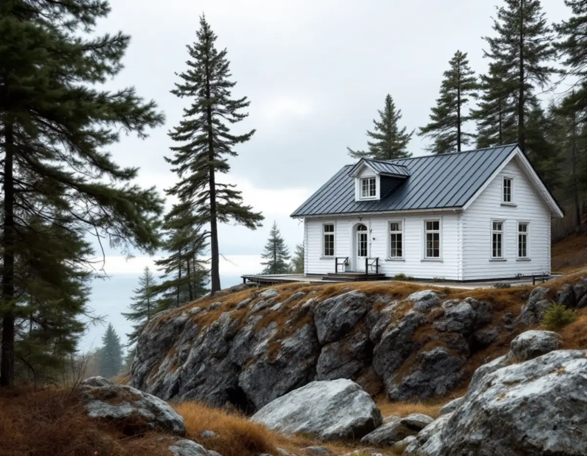
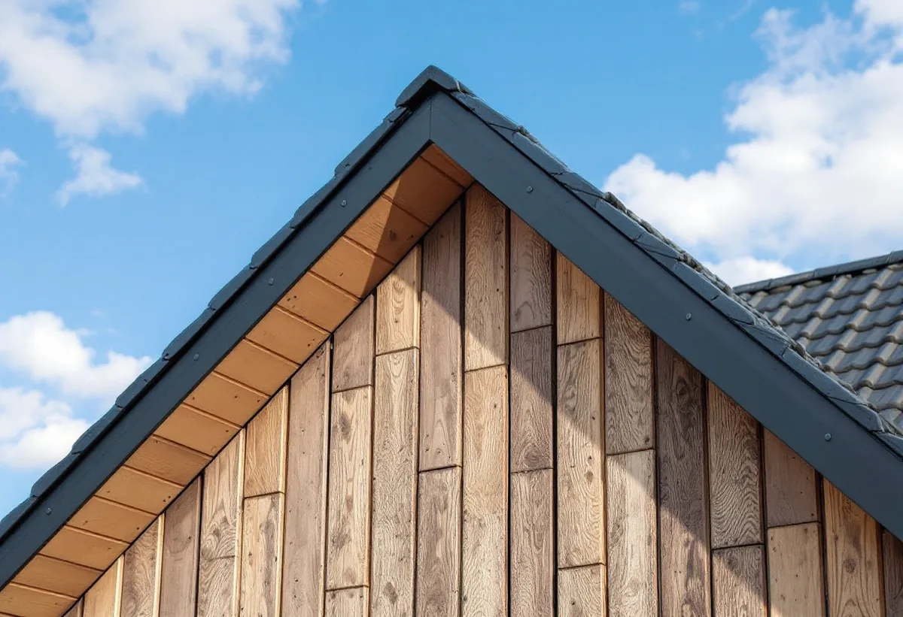

Besök på tomten
Vi går igenom takets kanter, rännor, bleck och beslag och hur ställningen kan stå.
På Lidingö tar vinden från fjärdarna i plåten på hus som står högt eller nära vattnet, och flera områden på ön är utpekade som kulturhistoriskt värdefulla. Geal Entreprenad AB har egna plåtslagare som lagar och byter plåttak, rännor, bleck och beslag på hela Lidingö, med gratis platsbesök och skriftligt kostnadsförslag.

Ett hus som står fritt mot vattnet får mer vind och slagregn än ett hus i en skyddad dalgång. Det märks först på plåten i takets kanter: vindskivor, nockplåt och fotplåt. Är plåten fäst med för få eller för korta fästdon börjar den röra sig, och då nöts hålen upp tills plåten släpper.
Östersjön är bräckt – SMHI anger 6–9 gram salt per kilo i Egentliga Östersjön mot ungefär 35 gram i världshaven – men fukt och vind från fjärdarna gör ändå att ytskydd och fästdon slits snabbare på strandnära tomter. Vi väljer därför plåt och skruv efter läget och kontrollerar infästningen i kanterna särskilt noga.
Efter en storm är det ofta en enskild vindskiva eller en bit nockplåt som har lossnat. Det kan åtgärdas separat, men vi ser också över resten av kanten när vi ändå är uppe.

Lidingö stad skriver att det inom områden som är särskilt kulturhistoriskt värdefulla gäller utökad lovplikt för de flesta byggnadsåtgärder. I stadens webbkarta syns det som ett blått lager, och klickar du på fastigheten får du veta om den omfattas. Är fastigheten gulmarkerad kan det finnas värden som behöver bedömas, och då ska du kontakta kundcenter.
Utanför de värdefulla områdena har lättnaderna sedan 1 december 2025 blivit stora. Staden räknar upp att bygglov för fasadändringar på en- och tvåbostadshus har slopats – målning, byte av fasad- eller taktäckningsmaterial, takfönster och mer.
För ett plåtarbete betyder det att ett byte till samma material och utförande sällan är någon lovfråga, medan ett byte från tegel eller skiffer till plåt i ett blått område kräver lov. Mer om lokala takarbeten finns under takläggare på Lidingö.
Stadens kulturmiljöprogram antogs av kommunfullmäktige den 16 december 2024. Enligt staden är det ett kunskapsunderlag och inte juridiskt bindande, men det är ett stöd vid beslut i bygglovs- och planärenden. Programmet pekar ut och avgränsar värdefulla miljöer, inte varje enskild byggnad.
Staden har också äldre inventeringar av enskilda byggnader, dels från 1970- och 1980-talen, dels från 2013–2015. Genom att kontakta kundcenter på miljö- och stadsbyggnadskontoret kan du be att få ta del av de beskrivningar som finns för din fastighet. Där framgår ibland vilka material taket och plåtdetaljerna hade från början.
Begreppet K-märkt finns inte i juridisk mening, skriver staden. Det som brukar menas är att huset är byggnadsminne, har skyddsbestämmelser i detaljplan eller är utpekat i kulturmiljöprogrammet. För de nio byggnadsminnena på ön, bland dem radhusen på Canadastigen, är det länsstyrelsen som prövar ändringar.
På en kuperad tomt med stödmurar, terrasser eller ett hus i souterräng påverkar terrängen var ställningen kan stå och hur långa stuprören blir, och på en terrasserad tomt behöver vattnet från stupröret ledas så att det inte rinner mot nästa mur eller mot grannen.
Fönsterblecken på husets utsatta sidor tar också mycket vatten. Boverket pekar på bleckens lutning, att blecken sluter tätt mot väggen och en dränerande spalt under blecket som avgörande för att undvika fuktskador vid fönster. Byter vi bleck gör vi det med uppvik mot karmen och en droppkant som håller vattnet borta från fasaden.
Ska hela taket läggas om samtidigt beskriver vi arbetsgången under takrenovering på Lidingö.
Vi går igenom takets kanter, rännor, bleck och beslag och hur ställningen kan stå.
Blå eller gul markering och eventuella byggnadsinventeringar kontrolleras.
Lagning, delbyte och nytt utförande redovisas var för sig i skrift.
Material, ytskydd och skruv väljs efter hur utsatt huset står.
Kanterna fästs extra noga och bleck bockas efter fönster och fasad.
Vi går igenom arbetet med dig och rensar rännorna innan vi lämnar.
Skatteverket godkänner rotavdrag i småhus för att reparera, rengöra eller byta plåttak, hängrännor och stuprör och för att byta fönsterbleck, liksom för ställningen som behövs. Avdraget är högst 30 procent av arbetskostnaden, 50 000 kr per person och år och 75 000 kr sammanlagt för rot och rut.
Material och resor ger inget avdrag. Avdraget görs direkt på fakturan.
Hur mycket plåt som byts, om husets läge kräver kraftigare fästdon och ytskydd, hur många bleck och beslag som görs om och hur svår tomten är att ställa ställning på. Efter ett gratis platsbesök får du ett skriftligt kostnadsförslag.
Plåttak, hängrännor och beslag.
Plåtslagare i Stockholm →Takbyte, takbesiktning och plåtarbeten.
Takläggare på Lidingö →Brevik, Mölna och Käppala.
Takrenovering på Lidingö →Värdefulla hus, kulör och bidrag.
Fasadmålning på Lidingö →Villastäderna och Brevik på Lidingö.
Fönsterbyte på Lidingö →Slipa och behandla trägolv i kök och hall.
Golvslipning på Lidingö →Villastad, källarbadrum och gästhus.
Badrumsrenovering på Lidingö →Villastäder, radhusbyar och berg.
Byggföretag på Lidingö →Radhus, villor och putsfasader på Lidingö.
Fasadrenovering på Lidingö →Souterrängvillor, radhus och äldre villor på Lidingö.
Golvläggare på Lidingö →Villastäder, souterräng och radhusbyar.
Köksrenovering på Lidingö →Villastäder, radhusbyar och stugor på Lidingö.
Målare på Lidingö →Verandor, trappor och dörrar.
Snickare på Lidingö →Ny tapet med hänsyn till huset.
Tapetsering på Lidingö →Webbkartan, programmet och frivilligt lov.
Tillbyggnad på Lidingö →Behåll stommen, bygg om resten.
Totalrenovering på Lidingö →